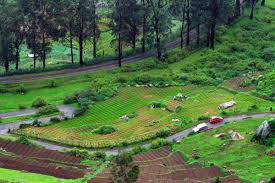
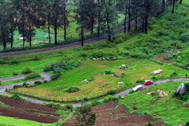

Ooty (short for Udhagamandalam) is a resort town in the Western Ghats mountains, in southern India's Tamil Nadu state. Founded as a British Raj summer resort, it retains a working steam railway line. Other reminders of its colonial past include Stone House, a 19th-century residence, and the circa-1829 St. Stephen’s Church. Its 55-acre Government Botanical Garden lies on the slopes of Doddabetta Peak.
The Ooty Is The Place Were You Can Actualy Feel The Peacce
The Ooty Is Located In Tamil Nadu
1. Which month is best for Ooty?
Though Ooty has good climate all year round, the best time to visit Ooty is in the summer months between March and June. The day time temperatures creep up and the air is less misty as compared to the winter and monsoon seasons.
2. What's special in Ooty?
Its scenic beauty, colonial charm, tribal culture, Ooty toy train, mountains, lakes, gardens, waterfalls, wildlife and panoramic views make Ooty a perfect holiday destination. Ooty is a paradise on earth. Unwind yourself in this nature's haven away from chaos. Plan your holiday to Ooty now!
3. Why is Ooty famous?
Some of the top tourist destinations in Ooty are the Nilgiris, popularly known as the Blue Mountains, where eucalyptus trees emit a misty blue haze early in the morning. The main draws here, especially for lovers of nature, are the lofty hills and the pleasant climate throughout the year.
 
